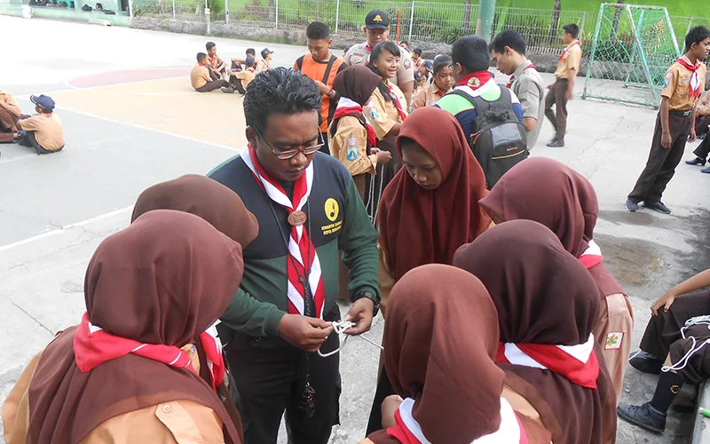
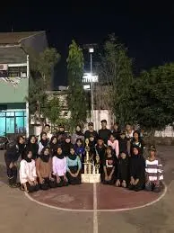
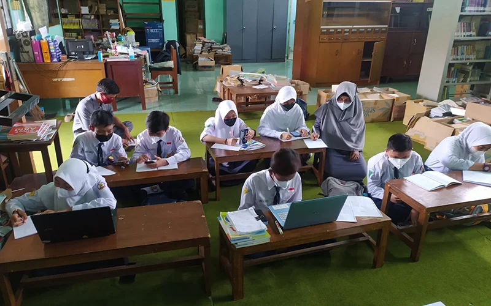
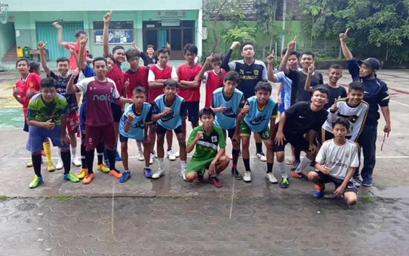
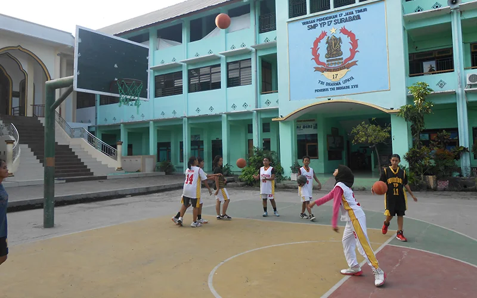
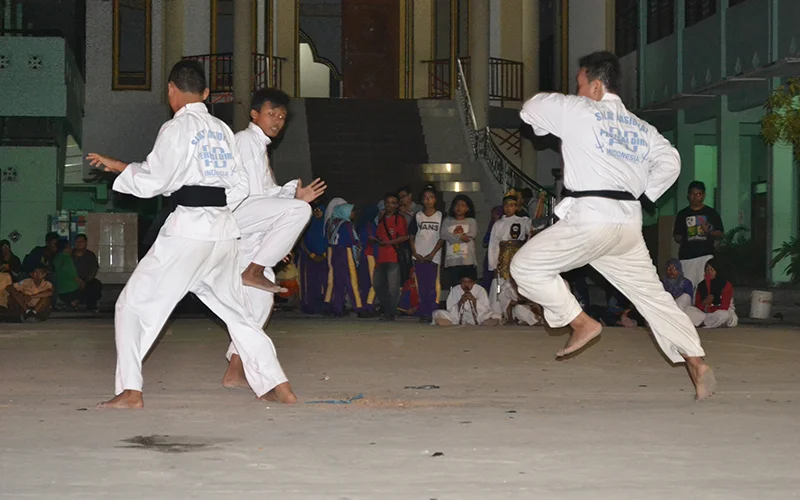
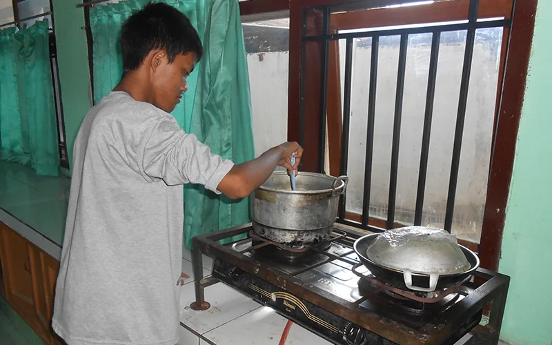
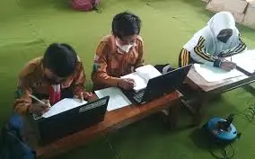

Pramuka
Belajar keberanian, kemandirian, dan semangat petualangan serta keterampilan bertahan di alam bebas.

PASKIBRA
Membentuk kedisiplinan, kepercayaan diri, dan patriotisme melalui latihan tata upacara dan baris-berbaris.

Kelompok Matematika
Wadah bagi pecinta angka untuk mengeksplorasi konsep menantang dan mengejar prestasi tinggi.

Futsal
Mengasah teknik menggiring dan mengumpan bola dengan kecepatan permainan yang dinamis.

Bola Basket
Membangun kebugaran fisik dan kerjasama tim yang kuat seperti sebuah keluarga.

Perisai Diri
Mengembangkan keterampilan fisik, mental, dan disiplin melalui seni bela diri pencak silat.

PMR
Belajar tentang pertolongan pertama dan pelayanan sosial untuk menjadi agen perubahan positif.

Kewirausahaan
Mengasah keterampilan bisnis dan perencanaan kreatif agar ide menjadi kenyataan.

English Club
Mendalami Bahasa Inggris melalui percakapan, permainan, dan proyek kreatif internasional.